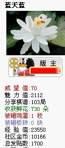

21个受益匪浅的小故事
#1 21个受益匪浅的小故事 作者：蓝天蓝 发表时间：2012-1-2 9:12:39
1.甲去买烟，烟29元，但他没火柴，跟店员说：“顺便送一盒火柴吧。”店员没给。乙去买烟，烟29元，他也没火柴，跟店员说：“便宜一毛吧。”最后，他用这一毛买一盒火柴。
这是最简单的心理边际效应。第一种：店主认为自己在一个商品上赚钱了，另外一个没赚钱。赚钱感觉指数为1。第二种：店主认为两个商品都赚钱了，赚钱指数为2。当然心理倾向第二种了。同样，这种心理还表现在买一送一的花招上，顾客认为有一样东西不用付钱，就赚了，其实都是心理边际效应在作怪。
启示：变换一种方式往往能起到意想不到的效果! 通常很多事情换一种做法结果就不同了。人生道路上，改善心智模式和思维方式是很重要的。
2.有个小男孩，有一天妈妈带着他到杂货店去买东西，老板看到这个可爱的小孩，就打开一罐糖果，要小男孩自己拿一把糖果。但是这个男孩却没有任何动作。几次的邀请之后，老板亲自抓了一大把糖果放进他的口袋中。回到家中，母亲好奇地问小男孩，为什么没有自己去抓糖果而要老板抓呢?小男孩回答很妙：“因为我的手比较小呀!而老板的手比较大，所以他拿的一定比我拿的多很多!”
启示：这是一个聪明的孩子，他知道自己的有限，而更重要的，他也知道别人比自己强。凡事不只靠自己的力量，学会适时地依靠他人，是一种谦卑，更是一种聪明。
3.美国知名主持人林克莱特有一天访问一名小朋友，问他说：“你长大后想要当做什么呀?”小朋友天真地回答：“嗯……我要当飞机的驾驶员!”林克莱特接着问：“如果有一天，你的飞机飞到太平洋上空所有引擎都熄火了，你会怎么办?”小朋友想了想：“我会先告诉坐在飞机上的人绑好安全带，然后我挂上我的降落伞跳出去。”当在场的观众笑得东倒西歪时，林克莱特继续注视着这孩子，想看他是不是自作聪明的家伙。没想到，接着孩子的两行热泪夺眶而出，这才使得林克莱特发觉这孩子的悲悯之心远非笔墨所能形容。于是林克莱特问他说：为什么你要这么做?”小孩的答案透露了这个孩子真挚的想法：“我要去拿燃料，我还要回来!!!”
启示：这就是“听的艺术”。一是听话不要听一半。二是不要把自己的意思，投射到别人所说的话上头。要学会聆听，用心听，虚心听。
4. 有两个和尚他们分别住在相邻的两座山上的庙里。这两座山之间有一条溪，于是这两个和尚每天都会在同一时间下山去溪边挑水，久而久之他么变成为了好朋友。就这样时间在每天挑水中不知不觉已经过了五年。突然有一天左边这座山的和尚没有下山挑水，右边那座山的和尚心想："他大概睡过头了。"便不以为意。哪知道第二天左边这座山的和尚还是没有下山挑水，第三天也一样。过了一个星期还是一样，直到过了一个月右边那座山的和尚终于受不了，他心想："我的朋友可能生病了，我要过去拜访他，看看能帮上什么忙。"于是他便爬上了左边这座山，去探望他的老朋友。等他到了左边这座山的庙，看到他的老友之后大吃一惊，因为他的老友正在庙前打太极拳，一点也不像一个月没喝水的人。他很好奇地问："你已经一个月没有下山挑水了，难道你可以不用喝水吗？"左边这座山的和尚说："来来来，我带你去看。"于是他带着右边那座山的和尚走到庙的后院，指着一口井说："这五年来，我每天做完功课后都会抽空挖这口井，即使有时很忙，能挖多少就算多少。如今终于让我挖出井水，我就不用再下山挑水，我可以有更多时间练我喜欢的太极拳。"
启示：我们在公司领的薪水再多，那都是挑水。而把握下班后的时间挖一口属于自己的井，培养自己另一方面的实力，未来当我们年纪大了，体力拼不过年轻人了，依然还是有水喝，而且还能喝得很悠闲。
5.有两个人相约到山上去寻找精美的石头，甲背了满满的一筐，乙的筐里只有一个他认为是最精美的石头。甲就笑乙：“你为什么只挑一个啊?”乙说：“漂亮的石头虽然多，但我只选一个最精美的就够了。”甲笑而不语，下山的路上，甲感到负担越来越重，最后不得已不断地从一筐的石头中挑一个最差的扔下，到下山的时候他的筐里结果只剩下一个石头!
启示：人生中会有许多的东西，值得留恋，有的时候你应该学会去放弃。
6.有一家牙膏厂，产品优良，包装精美，受到顾客的喜爱，营业额连续10年递增，每年的增长率在10％～20％。可到了第11年，业绩停滞下来，以后两年也如此。公司经理召开高级会议，商讨对策。会议中，公司总裁许诺说：谁能想出解决问题的办法，让公司的业绩增长，重奖10万元。有位年轻经理站起来，递给总裁一张纸条，总裁看完后，马上签了一张10万元的支票给了这位经理。那张纸条上写着：将现在牙膏开口扩大1毫米。消费者每天早晨挤出同样长度的牙膏，开口扩大了l毫米，每个消费者就多用1毫米宽的牙膏，每天的消费量将多出多少呢!公司立即更改包装。第14年，公司的营业额增加了32％。
启示：面对生活
#2 Re:21个受益匪浅的小故事 作者：蓝天蓝 发表时间：2012-1-2 9:14:23

发帖以后看到魅力值是2112，截图纪念一下